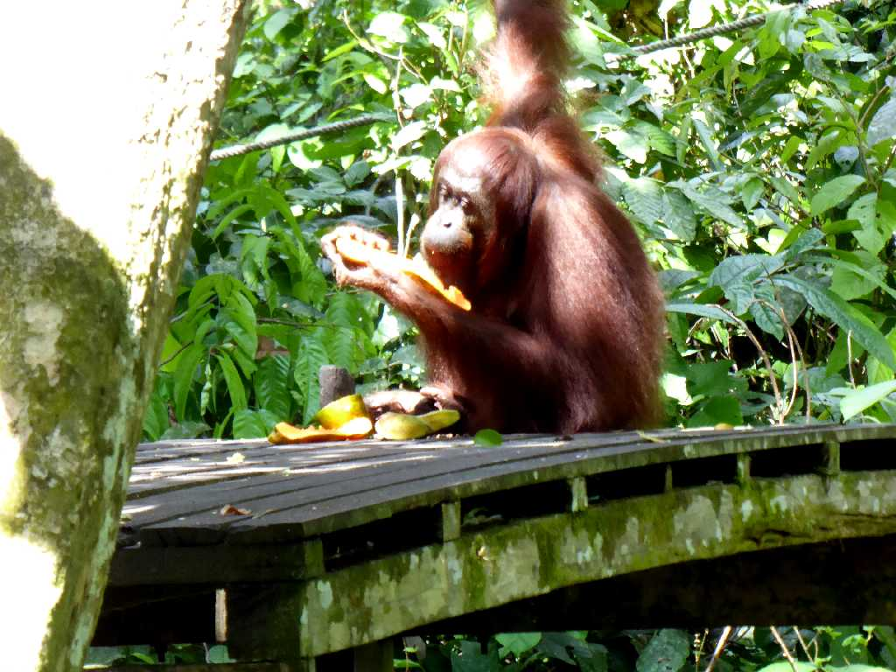
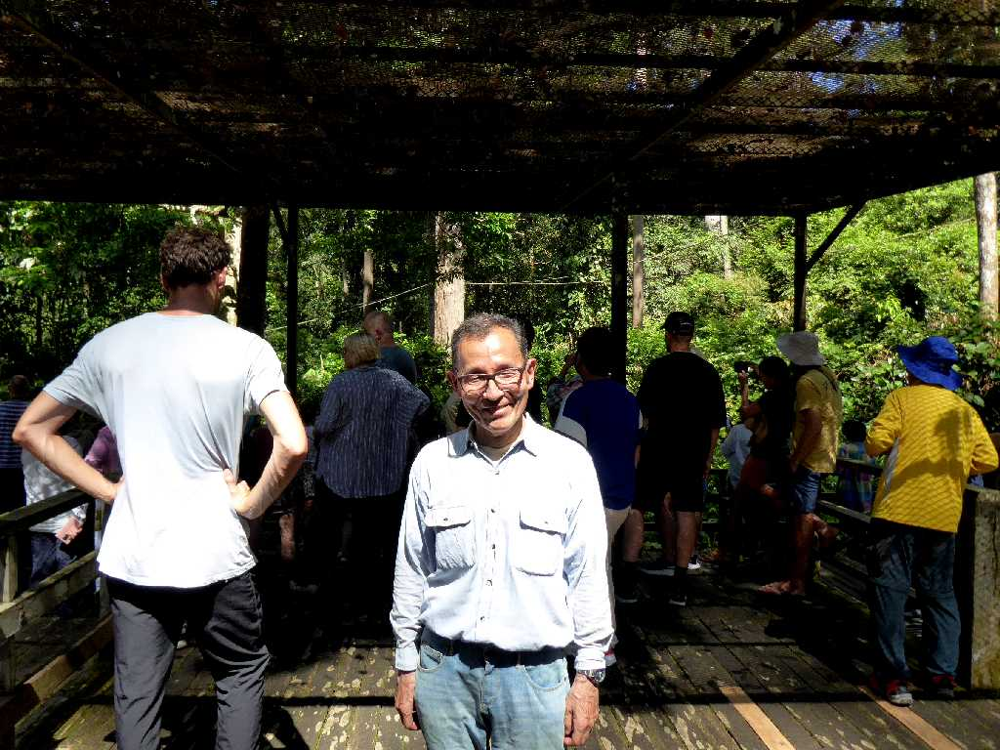
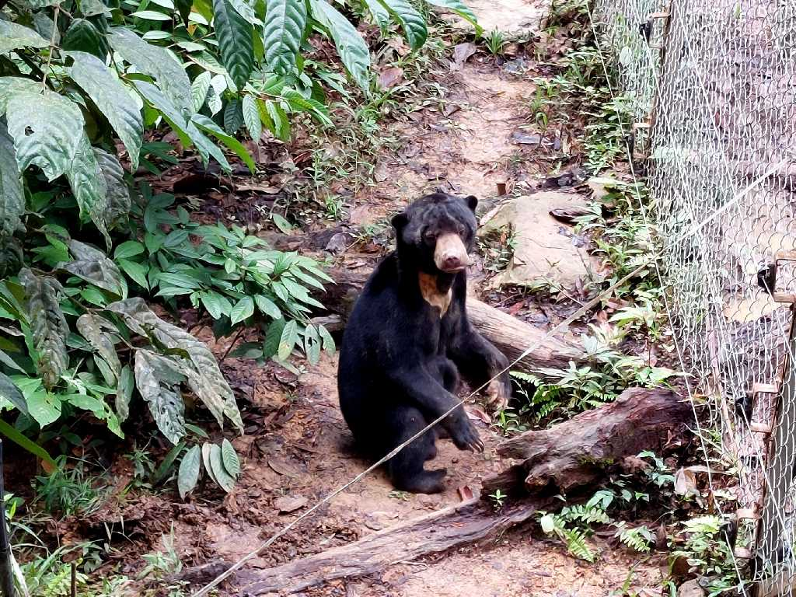

Orangutan Orangutan Rehabilitation Centre Sepilok
１９６４年に設立された森の人オラウータンを自然の森に返すリハビリテーションセンターで森の伐採植林などにより生活を奪われたオラウータンを保護している施設

June 22 2024 Orangutan Rehabilitation Centre Sepilok

Sun Bear Sun Bear Conservation Centre Sepilok
マレー熊は世界一小型の熊で胸に太陽の様な模様がある